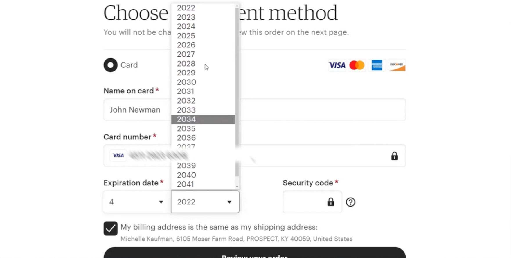

Pick Your Date Faster!
Before: Inefficient Design
This old design uses two dropdown menus. Users must click several times to select a month and year.

Problem: 4+ clicks to complete, slow for mobile users.
After: Improved Prototype
Click once for month and once for year. 12 month buttons + recent years below.
No selection yet.
Click Count: 0
Why This Design Is Better
- Reduced clicks: from 4+ to just 2 total
- Faster completion time: average 2–3 seconds
- Improved clarity: visible month and year options at once
- Mobile-friendly: larger buttons, no scrolling dropdowns
- Accessibility: better color contrast and touch targets